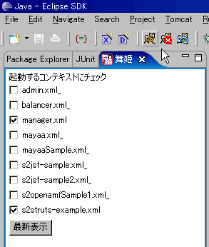

|
 |
|||||
舞姫についてTomcatの起動を早くする為のEclipseプラグインです。チェックボックスを操作するだけで簡単にTomcatのContextを有効/無効にできます。 インストール更新サイト : http://eclipse.seasar.org/updates/3.1/ インストール前の準備1."Sysdeo Eclipse Tomcat Launcher plugin"をインストールするhttp://www.sysdeo.com/sysdeo/eclipse/tomcatplugin2.コンテキスト宣言モードを変更するウインドウ -> 設定設定 -> Tomcat -> コンテキスト宣言モード コンテキストにチェックする 
3.server.xmlを編集するTOMCAT_HOME\conf\server.xmlの中のContextと TOMCAT_HOME\conf\Catalina\localhost のxml内のContextが重複してたら、server.xmlから削除する 使い方1.舞姫ビューを表示する

2.チェックしてTomcatを起動必要とするプラグイン |